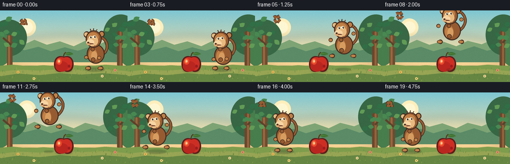
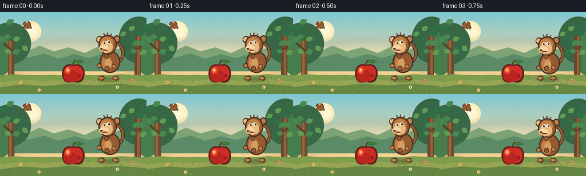
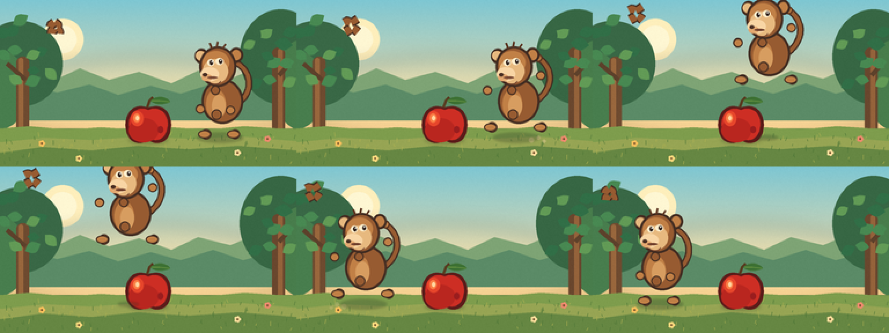

CODING AGENTS AS PIXEL WORLD MODELS
traex/DeepSeek-V4.1-Flash · dynamic_spatial_relationship_0057
点击播放 · 原生 RGB 像素
逐轮保存的候选
回放视频、检查图与代码变化。
每份候选均可单独播放。实际图片检查记录在下方工具轨迹中。
候选 01播放与检查图
点击播放 · 原生 RGB 像素

展开代码变化
--- 上一保存版本
+++ 本次保存版本
@@ -0,0 +1,382 @@
+from __future__ import annotations
+
+import math
+from pathlib import Path
+
+import numpy as np
+from PIL import Image, ImageDraw, ImageFilter
+
+import artifact_io
+
+
+WIDTH = 256
+HEIGHT = 144
+FRAMES = 20
+FPS = 4.0
+SCALE = 4
+CW = WIDTH * SCALE
+CH = HEIGHT * SCALE
+
+INK = (67, 45, 34)
+FUR_DARK = (91, 52, 32)
+FUR = (151, 91, 49)
+FUR_LIGHT = (193, 128, 70)
+FACE = (231, 185, 127)
+FACE_LIGHT = (248, 213, 164)
+CREAM = (255, 238, 204)
+
+
+def p(value: float) -> int:
+ return int(round(value * SCALE))
+
+
+def box(x0, y0, x1, y1):
+ return (p(x0), p(y0), p(x1), p(y1))
+
+
+def point(x, y):
+ return (p(x), p(y))
+
+
+def cubic(p0, p1, p2, p3, steps=24):
+ points = []
+ for i in range(steps + 1):
+ t = i / steps
+ u = 1.0 - t
+ x = u**3 * p0[0] + 3 * u * u * t * p1[0] + 3 * u * t * t * p2[0] + t**3 * p3[0]
+ y = u**3 * p0[1] + 3 * u * u * t * p1[1] + 3 * u * t * t * p2[1] + t**3 * p3[1]
+ points.append(point(x, y))
+ return points
+
+
+def draw_polyline(draw, points, fill, width, joint="curve"):
+ draw.line(points, fill=fill, width=p(width), joint=joint)
+ radius = width / 2
+ for x, y in (points[0], points[-1]):
+ draw.ellipse(box(x - radius, y - radius, x + radius, y + radius), fill=fill)
+
+
+def draw_limb(draw, points, width=6):
+ draw_polyline(draw, points, INK, width + 2.2)
+ draw_polyline(draw, points, FUR, width)
+
+
+def draw_tail(draw, x, y, lift, airborne):
+ start = (x + 13, y - 28 - lift)
+ if airborne:
+ c1 = (x + 31, y - 38 - lift)
+ c2 = (x + 35, y - 57 - lift)
+ end = (x + 19, y - 68 - lift)
+ else:
+ c1 = (x + 29, y - 35 - lift)
+ c2 = (x + 30, y - 58 - lift)
+ end = (x + 11, y - 65 - lift)
+ pts = cubic(start, c1, c2, end, 30)
+ draw_polyline(draw, pts, INK, 6.0)
+ draw_polyline(draw, pts, FUR, 3.6)
+ draw.ellipse(box(end[0] - 3.4, end[1] - 3.4, end[0] + 3.4, end[1] + 3.4), fill=FUR_DARK)
+ draw.ellipse(box(end[0] - 2.2, end[1] - 2.2, end[0] + 2.2, end[1] + 2.2), fill=FUR_LIGHT)
+
+
+def draw_monkey(base, x, lift, pose):
+ layer = Image.new("RGBA", (CW, CH), (0, 0, 0, 0))
+ d = ImageDraw.Draw(layer)
+ y = base - 1 - lift
+ crouch = 2.5 if pose == "crouch" else 0.0
+ airborne = pose == "air"
+ landing = pose == "land"
+ if landing:
+ crouch = 2.0
+
+ body_y = y - 31 + crouch
+ head_y = y - 58 + crouch
+ hip = (x + 5, y - 20 + crouch)
+ shoulder = (x - 1, y - 41 + crouch)
+
+ draw_tail(d, x, y + crouch, 0, airborne)
+
+ # Rear limbs sit behind the torso.
+ if airborne:
+ back_leg = [hip, (x + 14, y - 15), (x + 22, y - 8)]
+ back_arm = [shoulder, (x + 10, y - 46), (x + 21, y - 53)]
+ elif pose == "crouch":
+ back_leg = [hip, (x + 15, y - 10), (x + 10, y - 2)]
+ back_arm = [shoulder, (x + 11, y - 33), (x + 9, y - 21)]
+ else:
+ back_leg = [hip, (x + 14, y - 10), (x + 13, y - 2)]
+ back_arm = [shoulder, (x + 10, y - 34), (x + 9, y - 23)]
+ draw_limb(d, back_leg, 6.4)
+ draw_limb(d, back_arm, 5.5)
+
+ # Body, chest, and belly.
+ d.ellipse(box(x - 16, body_y - 19, x + 20, body_y + 20), fill=INK)
+ d.ellipse(box(x - 14, body_y - 17, x + 18, body_y + 18), fill=FUR)
+ d.ellipse(box(x - 12, body_y - 10, x + 5, body_y + 16), fill=FUR_LIGHT)
+ d.ellipse(box(x - 7, body_y - 5, x + 5, body_y + 14), fill=(215, 157, 96))
+
+ # Head, ears, and expressive face.
+ d.ellipse(box(x - 22, head_y - 18, x - 10, head_y - 5), fill=INK)
+ d.ellipse(box(x - 20, head_y - 16, x - 12, head_y - 7), fill=FUR_LIGHT)
+ d.ellipse(box(x - 21, head_y - 16, x - 13, head_y - 8), fill=FACE)
+ d.ellipse(box(x + 8, head_y - 19, x + 20, head_y - 6), fill=INK)
+ d.ellipse(box(x + 10, head_y - 17, x + 18, head_y - 8), fill=FUR_LIGHT)
+ d.ellipse(box(x - 18, head_y - 20, x + 14, head_y + 15), fill=INK)
+ d.ellipse(box(x - 16, head_y - 18, x + 12, head_y + 13), fill=FUR)
+ d.ellipse(box(x - 15, head_y - 16, x + 8, head_y + 4), fill=FUR_LIGHT)
+
+ # Pale monkey mask, muzzle, nose, and eyes.
+ d.ellipse(box(x - 15, head_y - 9, x + 7, head_y + 12), fill=FACE)
+ d.ellipse(box(x - 17, head_y - 2, x - 1, head_y + 10), fill=FACE_LIGHT)
+ d.ellipse(box(x - 16, head_y + 4, x - 7, head_y + 10), fill=(226, 167, 111))
+ d.ellipse(box(x - 15, head_y + 3, x - 11, head_y + 6), fill=(75, 48, 36))
+ d.ellipse(box(x - 11, head_y + 6, x - 2, head_y + 8), fill=(115, 67, 47))
+ d.ellipse(box(x - 11, head_y - 9, x - 5, head_y - 3), fill=CREAM)
+ d.ellipse(box(x - 9, head_y - 8, x - 6, head_y - 4), fill=(48, 35, 30))
+ d.ellipse(box(x - 7.5, head_y - 7.5, x - 6.2, head_y - 6.2), fill=(255, 255, 246))
+ d.ellipse(box(x - 4, head_y - 10, x + 3, head_y - 4), fill=CREAM)
+ d.ellipse(box(x - 1, head_y - 9, x + 2, head_y - 5), fill=(48, 35, 30))
+ d.ellipse(box(x + 0.1, head_y - 8.5, x + 1.2, head_y - 7.3), fill=(255, 255, 246))
+ d.arc(box(x - 10, head_y + 5, x + 1, head_y + 13), 15, 155, fill=(102, 57, 40), width=p(0.8))
+
+ # Front limbs overlap the torso and make the jump pose readable.
+ if airborne:
+ front_leg = [(x - 3, y - 19), (x - 12, y - 13), (x - 21, y - 8)]
+ front_arm = [(x - 4, y - 40), (x - 15, y - 45), (x - 25, y - 40)]
+ elif pose == "crouch":
+ front_leg = [(x - 3, y - 19), (x - 12, y - 11), (x - 13, y - 2)]
+ front_arm = [(x - 4, y - 40), (x - 14, y - 31), (x - 17, y - 20)]
+ else:
+ front_leg = [(x - 3, y - 19), (x - 11, y - 11), (x - 12, y - 2)]
+ front_arm = [(x - 4, y - 40), (x - 14, y - 33), (x - 17, y - 24)]
+ draw_limb(d, front_leg, 6.8)
+ draw_limb(d, front_arm, 6.0)
+
+ # Hands and feet.
+ for hx, hy in (front_arm[-1], back_arm[-1]):
+ d.ellipse(box(hx - 4, hy - 3.5, hx + 4, hy + 4), fill=INK)
+ d.ellipse(box(hx - 3, hy - 2.5, hx + 3, hy + 3), fill=FUR_LIGHT)
+ for fx, fy in (front_leg[-1], back_leg[-1]):
+ d.ellipse(box(fx - 7, fy - 3.5, fx + 4, fy + 3.5), fill=INK)
+ d.ellipse(box(fx - 6, fy - 2.5, fx + 3, fy + 2.5), fill=FUR_LIGHT)
+
+ # Small fur accents on the crown.
+ for ox, oy, ex, ey in ((-7, -18, -9, -23), (-3, -19, -2, -24), (2, -18, 5, -22)):
+ d.line([point(x + ox, head_y + oy), point(x + ex, head_y + ey)], fill=FUR_DARK, width=p(1.8))
+
+ return layer
+
+
+def draw_apple(layer):
+ d = ImageDraw.Draw(layer)
+ cx, cy = 128, 105
+
+ # A soft contact shadow anchors the apple.
+ shadow = Image.new("RGBA", (CW, CH), (0, 0, 0, 0))
+ sd = ImageDraw.Draw(shadow)
+ sd.ellipse(box(111, 118, 145, 124), fill=(56, 63, 42, 80))
+ shadow = shadow.filter(ImageFilter.GaussianBlur(p(1.5)))
+ layer.alpha_composite(shadow)
+
+ outline = cubic((cx, cy - 12), (cx - 15, cy - 18), (cx - 22, cy - 3), (cx - 19, cy + 8), 24)
+ outline += cubic((cx - 19, cy + 8), (cx - 17, cy + 19), (cx - 7, cy + 21), (cx, cy + 16), 20)[1:]
+ outline += cubic((cx, cy + 16), (cx + 7, cy + 21), (cx + 17, cy + 19), (cx + 19, cy + 8), 20)[1:]
+ outline += cubic((cx + 19, cy + 8), (cx + 22, cy - 3), (cx + 15, cy - 18), (cx, cy - 12), 24)[1:]
+ d.polygon(outline, fill=(92, 28, 26))
+ inner = cubic((cx, cy - 10), (cx - 13, cy - 15), (cx - 19, cy - 2), (cx - 16, cy + 7), 24)
+ inner += cubic((cx - 16, cy + 7), (cx - 14, cy + 16), (cx - 6, cy + 18), (cx, cy + 14), 20)[1:]
+ inner += cubic((cx, cy + 14), (cx + 6, cy + 18), (cx + 14, cy + 16), (cx + 16, cy + 7), 20)[1:]
+ inner += cubic((cx + 16, cy + 7), (cx + 19, cy - 2), (cx + 13, cy - 15), (cx, cy - 10), 24)[1:]
+ d.polygon(inner, fill=(205, 46, 36))
+
+ # Warm red shading and a pair of restrained highlights.
+ d.ellipse(box(cx - 17, cy - 3, cx + 9, cy + 18), fill=(185, 38, 31))
+ d.ellipse(box(cx - 15, cy - 9, cx - 4, cy + 4), fill=(231, 70, 43))
+ d.ellipse(box(cx - 13, cy - 7, cx - 7, cy + 1), fill=(250, 126, 69))
+ d.ellipse(box(cx - 11, cy - 5, cx - 8, cy - 1), fill=(255, 214, 159))
+ d.ellipse(box(cx + 8, cy + 4, cx + 13, cy + 10), fill=(154, 29, 30))
+
+ # Stem and leaf.
+ draw_polyline(d, [point(cx - 1, cy - 12), point(cx + 1, cy - 18), point(cx + 4, cy - 21)], (88, 58, 31), 2.2)
+ leaf = cubic((cx + 2, cy - 18), (cx + 8, cy - 24), (cx + 17, cy - 21), (cx + 19, cy - 17), 18)
+ leaf += cubic((cx + 19, cy - 17), (cx + 13, cy - 14), (cx + 6, cy - 14), (cx + 2, cy - 18), 18)[1:]
+ d.polygon(leaf, fill=(61, 113, 51))
+ draw_polyline(d, [point(cx + 3, cy - 18), point(cx + 10, cy - 18), point(cx + 18, cy - 17)], (111, 153, 68), 0.8)
+
+
+def draw_leaf(draw, x, y, size, angle, color):
+ pts = []
+ for i in range(13):
+ t = i / 12
+ lx = size * (t - 0.5)
+ ly = -math.sin(t * math.pi) * size * 0.34
+ ca, sa = math.cos(angle), math.sin(angle)
+ pts.append(point(x + lx * ca - ly * sa, y + lx * sa + ly * ca))
+ for i in range(13):
+ t = 1 - i / 12
+ lx = size * (t - 0.5)
+ ly = math.sin(t * math.pi) * size * 0.34
+ ca, sa = math.cos(angle), math.sin(angle)
+ pts.append(point(x + lx * ca - ly * sa, y + lx * sa + ly * ca))
+ draw.polygon(pts, fill=color)
+
+
+def make_background():
+ y = np.linspace(0, 1, CH, dtype=np.float32)[:, None]
+ top = np.array((126, 199, 211), dtype=np.float32)
+ middle = np.array((241, 220, 168), dtype=np.float32)
+ bottom = np.array((249, 194, 119), dtype=np.float32)
+ blend1 = np.clip(y / 0.64, 0, 1)
+ blend2 = np.clip((y - 0.50) / 0.50, 0, 1)
+ rgb = top[None, :] * (1 - blend1) + middle[None, :] * blend1
+ rgb = rgb * (1 - blend2) + bottom[None, :] * blend2
+ arr = np.repeat(rgb[:, None, :], CW, axis=1).astype(np.uint8)
+ bg = Image.fromarray(arr, "RGB").convert("RGBA")
+ d = ImageDraw.Draw(bg, "RGBA")
+
+ # Pale sun and soft orchard haze.
+ d.ellipse(box(36, 16, 72, 52), fill=(255, 239, 188, 135))
+ d.ellipse(box(42, 22, 66, 46), fill=(255, 247, 211, 190))
+ haze = Image.new("RGBA", (CW, CH), (0, 0, 0, 0))
+ hd = ImageDraw.Draw(haze)
+ hd.ellipse(box(6, 50, 250, 127), fill=(255, 226, 165, 55))
+ bg.alpha_composite(haze.filter(ImageFilter.GaussianBlur(p(8))))
+
+ # Distant, low-contrast hills.
+ d.polygon(
+ [point(0, 83), point(0, 70), point(20, 62), point(45, 70), point(69, 59),
+ point(94, 69), point(120, 62), point(148, 72), point(171, 61),
+ point(199, 68), point(225, 57), point(256, 65), point(256, 91), point(0, 91)],
+ fill=(126, 164, 117, 190),
+ )
+ d.polygon(
+ [point(0, 96), point(0, 79), point(24, 72), point(49, 80), point(77, 73),
+ point(102, 82), point(130, 74), point(156, 81), point(184, 72),
+ point(210, 81), point(235, 74), point(256, 79), point(256, 104), point(0, 104)],
+ fill=(91, 139, 103, 210),
+ )
+
+ # Trees frame the action without competing with the central objects.
+ d.ellipse(box(-20, 18, 54, 92), fill=(57, 104, 70, 215))
+ d.ellipse(box(-30, 43, 25, 112), fill=(72, 126, 78, 225))
+ d.ellipse(box(207, 8, 278, 90), fill=(55, 103, 68, 220))
+ d.ellipse(box(235, 34, 290, 113), fill=(72, 125, 76, 225))
+ d.rounded_rectangle(box(14, 49, 25, 120), radius=p(5), fill=(111, 75, 48, 255))
+ d.rounded_rectangle(box(16, 50, 20, 118), radius=p(2), fill=(153, 103, 61, 255))
+ d.rounded_rectangle(box(235, 41, 246, 120), radius=p(5), fill=(106, 71, 46, 255))
+ d.rounded_rectangle(box(240, 42, 244, 118), radius=p(2), fill=(149, 99, 59, 255))
+ d.line([point(22, 69), point(6, 55)], fill=(93, 65, 43), width=p(4))
+ d.line([point(241, 65), point(252, 53)], fill=(93, 65, 43), width=p(4))
+
+ # Leaves in the foreground canopy.
+ rng = np.random.default_rng(7)
+ for i in range(24):
+ if i < 12:
+ lx, ly = rng.uniform(2, 44), rng.uniform(17, 76)
+ else:
+ lx, ly = rng.uniform(213, 252), rng.uniform(14, 77)
+ colors = [(72, 137, 82, 220), (98, 155, 86, 220), (49, 111, 71, 230)]
+ draw_leaf(d, lx, ly, rng.uniform(10, 16), rng.uniform(-0.8, 0.8), colors[i % 3])
+
+ # Meadow and a gently curved path.
+ d.rectangle(box(0, 111, 256, 144), fill=(111, 143, 72, 255))
+ d.polygon(
+ [point(0, 111), point(25, 109), point(58, 112), point(87, 110),
+ point(119, 112), point(148, 110), point(179, 112), point(211, 109),
+ point(256, 112), point(256, 144), point(0, 144)],
+ fill=(126, 157, 77, 255),
+ )
+ d.polygon(
+ [point(0, 123), point(38, 119), point(79, 121), point(122, 118),
+ point(166, 120), point(209, 118), point(256, 122), point(256, 144), point(0, 144)],
+ fill=(151, 165, 84, 255),
+ )
+ d.polygon(
+ [point(0, 132), point(37, 127), point(79, 130), point(119, 126),
+ point(162, 129), point(206, 126), point(256, 130), point(256, 144), point(0, 144)],
+ fill=(102, 135, 67, 255),
+ )
+
+ # Fine grass strokes and a few warm wildflowers.
+ for i in range(95):
+ gx = rng.uniform(0, 256)
+ gy = rng.uniform(116, 143)
+ length = rng.uniform(1.4, 4.2)
+ lean = rng.uniform(-1.2, 1.2)
+ color = (79, 119, 56, 220) if i % 3 else (174, 177, 82, 210)
+ d.line([point(gx, gy), point(gx + lean, gy - length)], fill=color, width=p(0.55))
+
+ for fx, fy, color in ((36, 124, (246, 191, 92)), (205, 132, (250, 220, 154)),
+ (231, 120, (239, 139, 111)), (68, 137, (248, 215, 124))):
+ for k in range(5):
+ a = k * 2 * math.pi / 5
+ d.ellipse(box(fx + math.cos(a) * 1.7 - 1.2, fy + math.sin(a) * 1.7 - 1.2,
+ fx + math.cos(a) * 1.7 + 1.2, fy + math.sin(a) * 1.7 + 1.2), fill=color)
+ d.ellipse(box(fx - 0.8, fy - 0.8, fx + 0.8, fy + 0.8), fill=(108, 72, 39))
+
+ # Subtle paper-like grain keeps the smooth vector shapes from feeling sterile.
+ grain_rng = np.random.default_rng(13)
+ grain = grain_rng.normal(0, 3.0, (CH, CW, 1))
+ base = np.asarray(bg.convert("RGB"), dtype=np.float32)
+ textured = np.clip(base + grain, 0, 255).astype(np.uint8)
+ return Image.fromarray(textured, "RGB").convert("RGBA")
+
+
+def motion_for(frame):
+ # A long readable hold, a compact crouch, then a 10-frame parabolic jump.
+ if frame <= 2:
+ return 190.0, 0.0, "stand"
+ if frame == 3:
+ return 190.0, 0.0, "crouch"
+ if frame >= 15:
+ return 58.0, 0.0, "crouch" if frame == 15 else "stand"
+ t = (frame - 4) / 10.0
+ x = 190.0 + (58.0 - 190.0) * t
+ lift = 49.0 * math.sin(math.pi * t) ** 0.82
+ pose = "air"
+ return x, lift, pose
+
+
+def draw_dust(layer, frame):
+ if frame not in (3, 4, 14, 15, 16):
+ return
+ d = ImageDraw.Draw(layer, "RGBA")
+ if frame in (3, 4):
+ x, strength = 201, 1.0 if frame == 4 else 0.55
+ for ox, oy, r in ((2, 121, 2.2), (8, 119, 1.8), (13, 122, 1.4)):
+ d.ellipse(box(x + ox - r, oy - r, x + ox + r, oy + r), fill=(229, 204, 149, int(120 * strength)))
+ else:
+ x, strength = 45, 1.0 if frame == 15 else 0.55
+ for ox, oy, r in ((-4, 121, 2.2), (-10, 119, 1.8), (-15, 122, 1.4)):
+ d.ellipse(box(x + ox - r, oy - r, x + ox + r, oy + r), fill=(229, 204, 149, int(120 * strength)))
+
+
+def render():
+ background = make_background()
+ frames = []
+ for frame in range(FRAMES):
+ canvas = background.copy()
+ layer = Image.new("RGBA", (CW, CH), (0, 0, 0, 0))
+ draw_apple(layer)
+ x, lift, pose = motion_for(frame)
+ draw_dust(layer, frame)
+ shadow = Image.new("RGBA", (CW, CH), (0, 0, 0, 0))
+ sd = ImageDraw.Draw(shadow)
+ shadow_scale = max(0.45, 1.0 - lift / 80.0)
+ sw = 20.0 * shadow_scale
+ sh = 4.2 * shadow_scale
+ sd.ellipse(box(x - sw, 119 - sh, x + sw, 119 + sh), fill=(48, 62, 39, 75))
+ layer.alpha_composite(shadow.filter(ImageFilter.GaussianBlur(p(1.1))))
+ layer.alpha_composite(draw_monkey(119, x, lift, pose))
+ canvas.alpha_composite(layer)
+ small = canvas.convert("RGB").resize((WIDTH, HEIGHT), Image.Resampling.LANCZOS)
+ frames.append(np.asarray(small, dtype=np.uint8))
+ return np.stack(frames)
+
+
+def main():
+ frames = render()
+ artifact_io.save(frames, Path(__file__).resolve().parent)
+
+
+if __name__ == "__main__":
+ main()
候选 02播放与检查图
点击播放 · 原生 RGB 像素


展开代码变化
--- 上一保存版本
+++ 本次保存版本
@@ -230,7 +230,7 @@
rgb = top[None, :] * (1 - blend1) + middle[None, :] * blend1
rgb = rgb * (1 - blend2) + bottom[None, :] * blend2
arr = np.repeat(rgb[:, None, :], CW, axis=1).astype(np.uint8)
- bg = Image.fromarray(arr, "RGB").convert("RGBA")
+ bg = Image.fromarray(arr).convert("RGBA")
d = ImageDraw.Draw(bg, "RGBA")
# Pale sun and soft orchard haze.
@@ -318,7 +318,7 @@
grain = grain_rng.normal(0, 3.0, (CH, CW, 1))
base = np.asarray(bg.convert("RGB"), dtype=np.float32)
textured = np.clip(base + grain, 0, 255).astype(np.uint8)
- return Image.fromarray(textured, "RGB").convert("RGBA")
+ return Image.fromarray(textured).convert("RGBA")
def motion_for(frame):
可观测工具轨迹
实际执行的命令与返回图片。
命令 1exit 0
/bin/bash -c "pwd && rg --files -g 'GENERATION_RULES.md' -g 'prompt.txt' -g 'task_spec.json' -g '"'!node_modules'"'"
命令 2exit 0
/bin/bash -c "ls -la && find . -maxdepth 2 -type f | sed 's#"'^./##'"' | sort | head -200"
命令 3exit 0
/bin/bash -c 'cat GENERATION_RULES.md'
命令 4exit 0
/bin/bash -c "cat prompt.txt && printf '\\n--- task_spec ---\\n' && cat task_spec.json"
命令 5exit 0
/bin/bash -c "sed -n '1,240p' artifact_io.py && printf '\\n--- player ---\\n' && sed -n '1,220p' player_template.html"
命令 6exit 0
/bin/bash -c 'which ffmpeg || true; which ffprobe || true; which python || true; which node || true; which convert || true; which blender || true; ls -la .tmp'
命令 7exit 0
/bin/bash -c "python - <<'PY'
from PIL import Image
import numpy as np
print('Pillow', Image.__version__)
print('numpy', np.__version__)
PY"命令 8exit 0
/bin/bash -c 'python generate.py'
命令 9exit 0
/bin/bash -c "python - <<'PY'
from PIL import Image
frames=[Image.open(f'frames/{i:02d}.png').resize((512,288), Image.Resampling.NEAREST) for i in (0,4,7,10,14,19)]
out=Image.new('RGB',(1536,576),(24,28,34))
for j,im in enumerate(frames):
out.paste(im,((j%3)*512,(j//3)*288))
out.save('.tmp/detail_check.png')
PY"命令 10exit 0
/bin/bash -c "python generate.py && python - <<'PY'
from pathlib import Path
import numpy as np
from PIL import Image
import json
p=Path('.')
data=np.load(p/'pixels.npz')['pixels']
assert data.shape == (144,256,20), data.shape
files=sorted((p/'frames').glob('*.png'))
assert len(files)==20, len(files)
for i,f in enumerate(files):
im=Image.open(f)
assert im.size==(256,144) and im.mode=='RGB', (f, im.size, im.mode)
assert (p/'index.html').stat().st_size > 100000
# Confirm the apple's central red mass stays put and the monkey silhouette changes sides.
arr=np.stack([np.asarray(Image.open(f)) for f in files])
for idx in (0,7,19):
frame=arr[idx]
red=(frame[:,:,0]>150)&(frame[:,:,0]>frame[:,:,1]*1.7)&(frame[:,:,0]>frame[:,:,2]*1.5)
ys,xs=np.where(red)
print(idx, 'apple-red-center', round(float(xs.mean()),2), 'pixels', len(xs))
print('frames', len(files), 'shape', arr.shape, 'dtype', arr.dtype)
print('unique colors/frame', [len(np.unique(arr[i].reshape(-1,3),axis=0)) for i in (0,7,19)])
print('artifacts', sorted(x.name for x in p.iterdir() if x.is_file()))
PY"视觉工具实际返回图片 1

视觉工具实际返回图片 2

保存候选 2 份；完成命令 10 次；可验证图片返回 2 张。原始 API 响应与完整日志保留在本地。